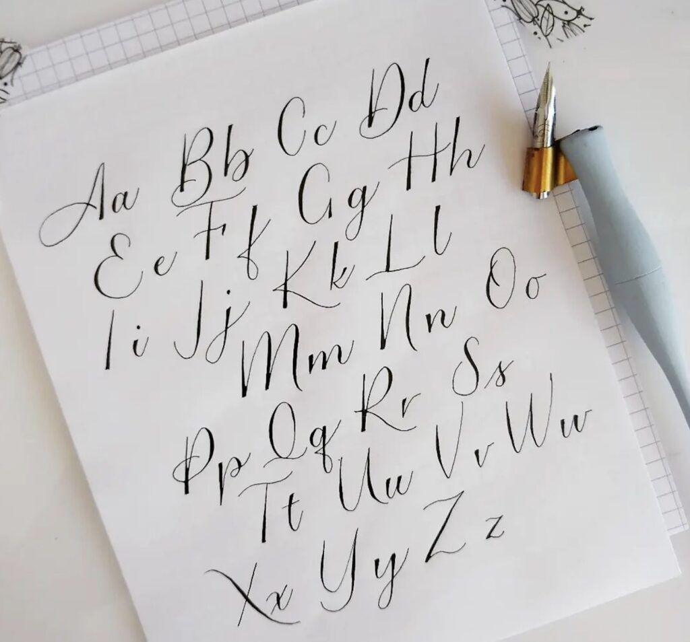
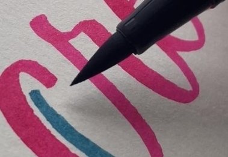

Tips For Beginners
If you’re new to the world of calligraphy and lettering, it can be overwhelming at first! But don’t worry—with a few beginner tips, you’ll soon have your work looking as beautiful as ever:
1. Start With A Simple Alphabet

The best way to start learning calligraphy is to begin with a simple alphabet. This will help you get a feel for the basic strokes and how to form the letters. Once you have mastered the basic alphabet, you can move on to more difficult alphabets.
2. Use A Light Touch

When you are first starting out, it is important to use a light touch when you are writing. This will help you get a feel for the pen and how much pressure to apply. As you practice, you can start to increase the amount of pressure you apply.
3. Use The Proper Tools
Even though calligraphy and lettering require mostly basic tools, make sure to get the proper type of paper and ink you need. Calligraphy paper is usually thicker than regular paper, which will help prevent your ink from bleeding through. Be sure to use an ink that is specifically designed for calligraphy and lettering; regular ink will not flow as smoothly from your pen. You can also do research on different pens, or brushes with a brush tip specifically made for the calligraphy or lettering style you’re practicing. Explore different tools that you feel comfortable using.
4. Take Your Time
You can’t become a lettering artist or professional calligrapher overnight; the most important thing to remember is it takes time and practice to perfect your skill. So be patient with yourself and don’t expect perfection from the start. Just keep practicing and eventually you will get there! Practice sheets are a great tool to help you with drawing letters in the beginner stages.
5. Get Inspired By Others
There are many great resources available online and in libraries where you can find inspiration for your own calligraphic work. Take some time to look through these resources and find examples of calligraphy that you like. Or you can find work from a hand lettering artist that specializes in the type of lettering that you want to do. Then you can use these examples as a starting point for your own work.
In conclusion, calligraphy and lettering are major art forms that have been used for centuries to create beautiful works. Modern-day calligraphers have a wide range of inks to choose from, each with their own unique properties. From fountain pen inks and gouache paints to traditional ink sticks and sumi inks, there’s something out there for everyone! To get started with calligraphy or lettering, it’s important to begin with a simple alphabet and use the proper paper and ink. With practice, patience, and inspiration from words or letters that other artists have created, you can make stunning artwork that will last for generations. So grab your favorite ink and get writing! If you’re in need of supplies swing by our store located in Downtown Wilmington or contact us online!
home page?